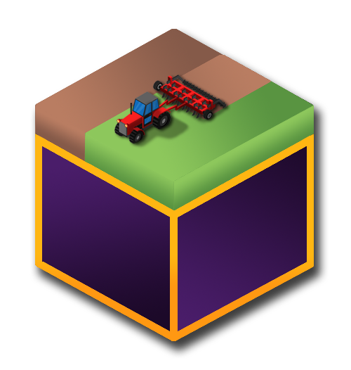
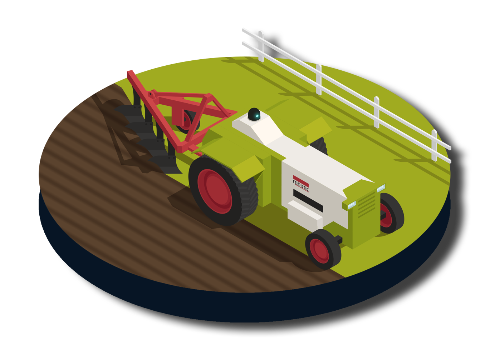
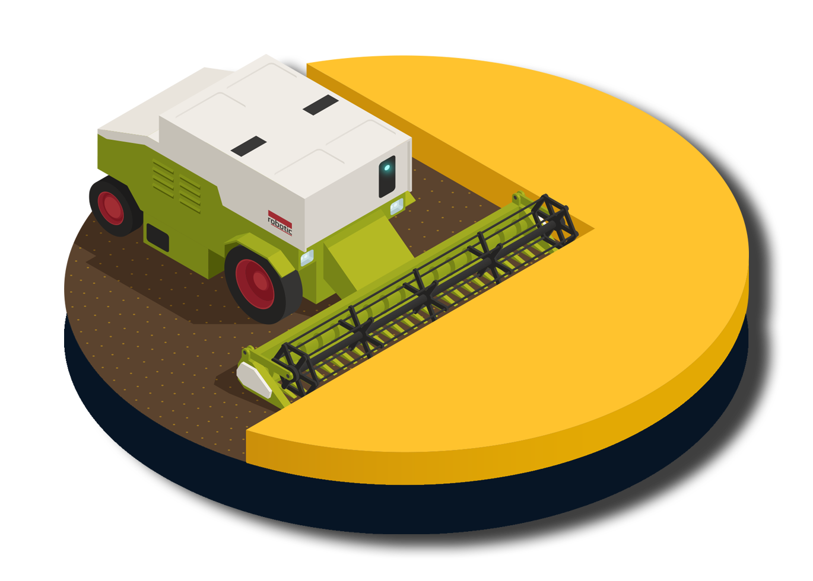

Active Project
Demmin Data Cube
About the Project
Durable Environmental Multidisciplinary Monitoring Information Network

DEMMIN involves eight interdisciplinary project partners covering various research aspects. The department of remote sensing of the University of Würzburg focuses on the development of cloud-based big data architectures for spatial data management, the provision of ready-to-use earth observation data and the development of land cover information and biophysical parameters. Therefore, one the main topic is the intuitive use of satellite time series from both optical and radar satellites to record and evaluate dynamic land changes. Research questions on the observation of biodiversity in protected areas, forest ecosystems and in the agricultural landscape are processed.
Stakeholders

AgriSens – DEMMIN 4.0
Launched in 2020 in Mecklenburg-Western Pomerania, AgriSens aims to use geographic information in crop production by identifying remote sensing applications for practical agricultural questions — simplifying data access and reducing environmental impacts for farmers.

PhenoSAR – DEMMIN
PhenoSAR monitors farmland using Sentinel-1 radar data within an Open Data Cube framework, focusing on phenological development and detecting various stages of plant growth and their transition throughout the agricultural season.
Facts & Figures
Available Datasets

- Meteorological datasets — German Weather Service (DWD)
- Landsat 5–8 optical and thermal data
- Sentinel-1 Radar (SAR) data
- Sentinel-2 optical data
- Copernicus Digital Elevation Model